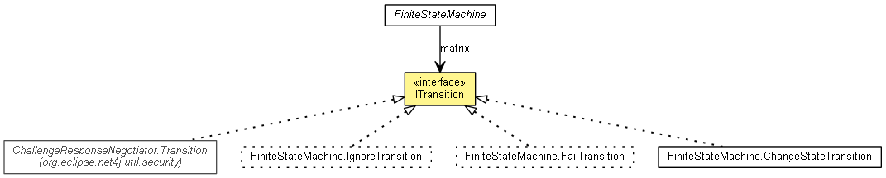

org.eclipse.net4j.util.fsm
Interface ITransition<STATE extends Enum<?>,EVENT extends Enum<?>,SUBJECT,DATA>
- All Known Implementing Classes:
- ChallengeResponseNegotiator.Transition, FiniteStateMachine.ChangeStateTransition, FiniteStateMachine.FailTransition, FiniteStateMachine.IgnoreTransition
- public interface ITransition<STATE extends Enum<?>,EVENT extends Enum<?>,SUBJECT,DATA>

Encpsulates the logic to be executed when an event arrives for a subject in a particular state.
execute
void execute(SUBJECT subject,
STATE state,
EVENT event,
DATA data)
Copyright (c) 2004 - 2012 Eike Stepper (Berlin, Germany) and others.